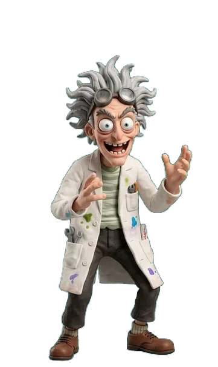

🔺 مختبر الهرم — ثنائي الأبعاد
🖥 الجهاز والدرجة
💻 كمبيوتر
📱 جوال
⬇ انزل
⬆ اقفز
أظهر مراسي الدرجات
📍 أعد المراسي لمواضعها المحسوبة
اسحب أيّ مرساة (الدائرة المرقّمة) لتضعها على سطح الدرجة بالضبط — وهي نقطة وقوف قدمَي الشخصية. تُحفظ تلقائيًّا لكل جهاز على حدة.
أظهر توهّج الدرجة
🎭 الشخصية
حجمها
دورانها
اعكسها أفقيًّا
⧉ انسخ مراسي هذه الشخصية للبقيّة
📱 اشتقّ قياسات الجوال من الحاسوب
لكل شخصية مراسيها السبعة وحجمها ودورانها — فلا تتداخل الأقدام ولا تطفو الطويلة فوق القصيرة. والتحكّم منفصل للحاسوب والجوال.
🧍 المشهد — عامّ
الطول الأساس
تناقص المنظور
📐 وزّع الأحجام تلقائيًّا
التناقص يُصغّر الشخصية كلّما صعدت: صفر = حجمٌ ثابت، ٦٠٪ = القمّة أصغر من القاعدة بـ٦٠٪.
📍 الدرجة
١
— إحداثيّات خاصّة
إزاحة أفقية
إزاحة رأسية
الحجم
الدوران
⬇ انسخ هذه الإعدادات لما تحتها
اسحب الشخصية بالفأرة على المسرح للضبط السريع.
🕶 الظلّ
ظلٌّ تحت القدمين
العرض
التسطّح
العتامة
النعومة
إزاحة رأسية
🦘 القفزة
الارتفاع
المدّة
تأخير الانطلاق
الانضغاط
الانضغاط هو تسطّح الجسم لحظة النطّ والهبوط — يعطي إحساس الثقل.
في المقطع: انحناءٌ عند ٠٫٩ث، انطلاقٌ عند ١٫٠ث، ذروةٌ عند ١٫٥ث، هبوطٌ عند ٢٫٣ث. «تأخير الانطلاق» يجعل صعود الشخصية يبدأ مع تمدُّد جسمها لا قبله.
🎬 مقاطع Flow
وقفة (لوب)
قفزة
تفريغ الأخضر (كروما)
لون المفتاح
السماحية
نعومة الحافّة
كبح الانعكاس
الملفات تُقرأ من جهازك مباشرةً ولا تُرفع — للتجربة قبل الاعتماد.
تلقائي
شفافية
كروما
الطريق الحالي:
جارٍ الفحص…
📋 انسخ القياسات
↺ القيم الأصلية